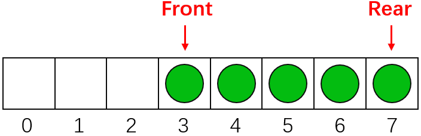

# 栈
栈是线性数据结构，元素在其中只能先进后出，就像一端封闭一端开放的圆筒形容器
最早进入的元素叫做栈底 bottom ，最后的元素叫做栈顶 top
只有栈顶才能入栈 push 、出栈 pop
# 总结
栈的输出顺序与输入顺序相反，适合用与回溯，例如递归操作返回上一级递归、面包屑导航
# 队列
队列也是线性数据结构，元素在其中只能先入先出，就像现实中的隧道
队列的出口端叫做队头 front ，入口端叫队尾 rear ，队尾指针指向的位置必须空出一位
元素只能在队尾入队 enqueue 、队头出队 dequeue 时间复杂度 O (1)
# 循环队列
当队列使用数组实现时，不断进行入、出队操作，就会面临空间不足的情况，循环队列可以解决这个问题，并且不用扩容数组
只需将队尾放到数组的首位，重新利用先前出队的空间
当 (队尾下标 + 1) % 数组长度 = 队头下标时，说明队列已满

# 双端队列
# 优先队列
# 总结
队列的输出顺序和输入顺序相同，经常用于现实中的排队系统
# 散列表 (哈希表)
散列表是 hash 结构，由 Key 和 Valve 组成，通过对 Key 进行 hash 计算出 Value 在数组中的下标位置
index = HashCode (Key) % Array.length
# 哈希冲突
由于数组的长度是有限的，就会有 hash 冲突的情况，主要有两种方法解决这种问题
- 开放寻址法：当写入的位置已经有元素时，往后寻找空位写入
- 链表法：每一个元素都是一个链表的头节点，只需要用 next 指针指向要被写入的冲突的元素即可（HashMap 应用了此方法）
# 扩容
既然使用数组实现，那么就会涉及到扩容问题，虽然链表法可以一直往下延伸，但这会大大影响效率，在 HashMap 中判断需要扩容的条件是 HashMap.Size >= Capacity*LoadFactor，Capacity 指 HashMap 当前长度，LoadFactor 指 HashMap 的负载因子，默认为 0.75f
和数组扩容一样，先创建原数组两倍的新数组，不过要重新进行 hash 计算，因为数组长度发生了变化，先前计算得出的下标已经不再适用于新数组
# 树
树 tree 是 n (n>=0) 个节点的有限集。当 n=0 时，称为空树
非空树有以下特点：
- 有且仅有一个称为根的节点
root - 当 n>1 时，其余节点可分为 m (m>0) 个互不相交的有限集，每一个集合本身又是一个树，并称为根的子树
没有孩子的节点是树的末端，称做叶子节点 leaf
一个节点的上一级节点，是这个节点的父节点 parent ，从这个节点衍生出来的节点，是这个节点的孩子节点 child ，和这个节点同级，同一个父节点衍生出来的节点是这个节点的兄弟节点 sibling
树的最大层级数，称为树的高度和深度
# 二叉树
二叉树中的每一个节点最多能有两个孩子节点，也可以只有一个，或者没有。一个叫做左孩子 leftChild ，一个叫做右孩子 rightChild ，它们的顺序是固定和，如同名字一样
- 满二叉树：一个二叉树的每一个非叶子节点都有两个孩子节点，并且所有叶子节点都在同一层级
- 完全二叉树：完全二叉树的所有节点和同样高度的满二叉树的节点位置相同，仅要求最后一个节点之前的节点满分支即可